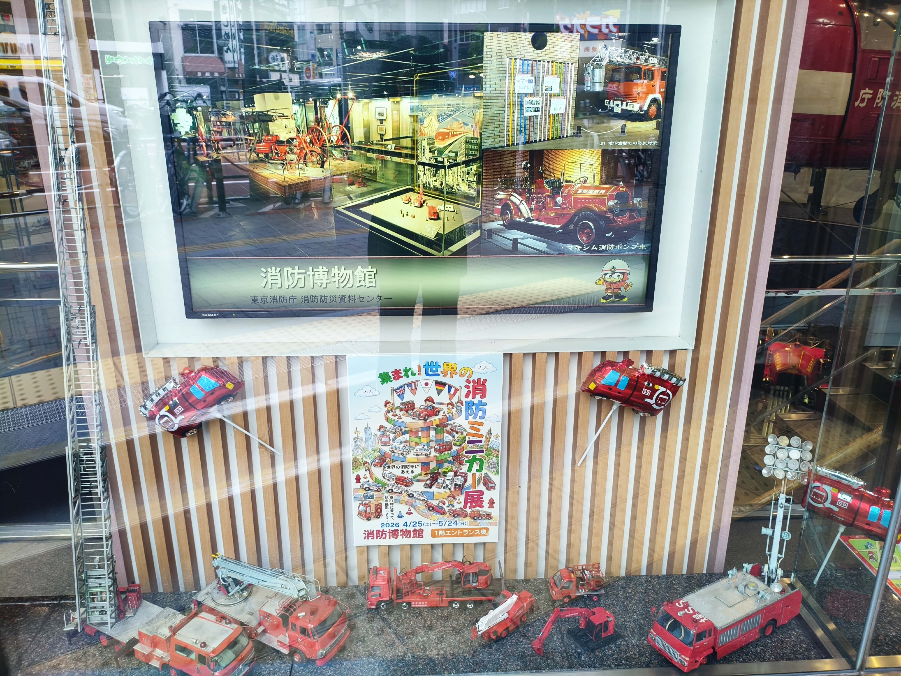
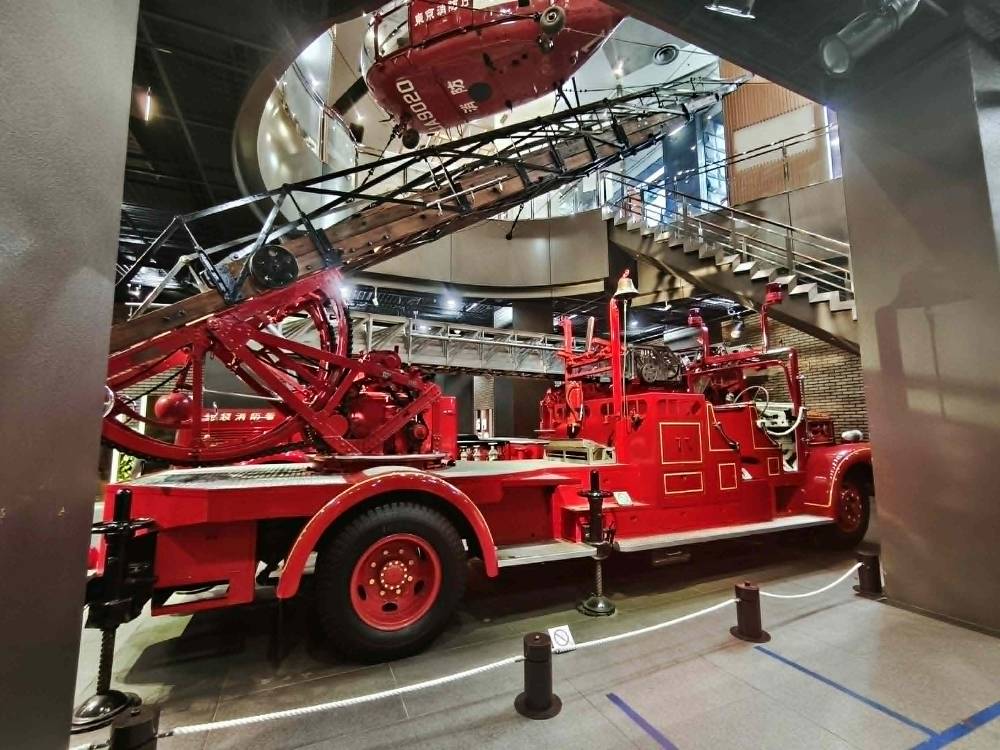
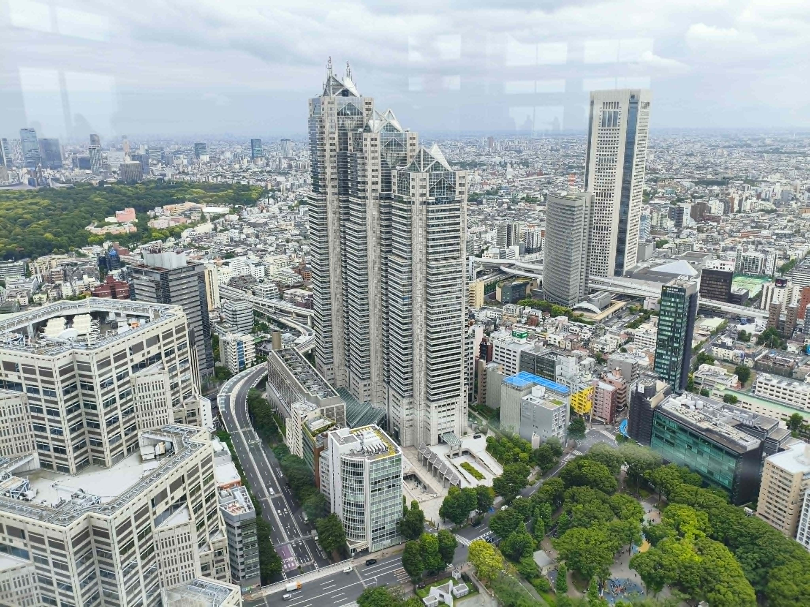

消防博物館
江戸から現代まで、消防の歴史を体感できる場所

アクセス
電車：丸ノ内線「四谷三丁目駅」から徒歩約5分。
徒歩：新宿駅西口から甲州街道を西へ進み、新宿中央公園を通り過ぎて約20〜30分。
展示内容
江戸時代に描かれた絵巻や錦絵、大正から昭和にかけての消防クラシックカー、最新の消防隊の装備など、消防に関する貴重な資料が展示されています。
🚒 体験コーナー
3階では子供用の防火衣を着て記念撮影ができ、シミュレーターで消火活動の疑似体験も可能です。
🚁 車両・ヘリコプター
地下1階には実物の消防自動車8台、5階屋外にはフランス製ヘリコプターがあり、操縦席に座ることができます。

見学の感想
「博物館は大人が行く場所だと思っていましたが、実際には家族連れが多く、世代を超えて学べる場所に感動しました。」
展示の迫力はもちろんですが、特に「まとい」の歴史が印象的でした。アニメで見たことはあっても、その本当の役割を知ることができ、理解が深まりました。
また、地震の際に上野公園の西郷隆盛像の周りに貼られた手書きの張り紙のエピソードも学びました。当時の人々の必死な思いが伝わり, 防災への意識がより強くなりました。
東京都庁展望室
地上202メートル、東京の鼓動を眼下に収めるパノラマ

アクセス & 豆知識
行き方：新宿駅西口から徒歩約10分。第1本庁舎1階の「展望室専用エレベーター」を利用します。
アドバイス：エレベーター待ちの列ができることが多いですが、スムーズに案内されるので安心です。入口が少し分かりにくい場合は、近くの警備員さんに尋ねると親切に教えてくれますよ。
パノラマビューと魅力
地上202メートルの高さにある45階の展望室からは、スカイツリーや富士山など、東京のランドマークを一望できる無料の人気スポットです。
🎹 都庁おもいでピアノ
南展望室には、誰でも自由に演奏できるアートピアノが設置されています。展望室内に響くピアノの音色が、特別な雰囲気を演出してくれます。
☕ カフェ＆ギフトショップ
景色を眺めながら飲食できるスペースや、東京の思い出になるお土産店も充実しており、ゆっくりと時間を過ごせます。

見学の感想
「江の島シーキャンドルから見た風景とはまた違う、都会ならではの圧倒的な魅力がありました。」
初めて訪れた際、入口を探すのに少し苦労しましたが、警備員さんがとても親切に案内してくださいました。エレベーターの列も思ったより待ち時間は短く、スムーズに45階へ上がることができました。
展望室で自由に奏でられるピアノの音色を聴きながら眺める東京の景色は、とても心地よいものでした。あいにく今回も曇り空で富士山をはっきりと見ることはできませんでしたが、高い場所から街を見下ろす体験は、私にとって新しい発見に満ちた貴重な時間となりました。